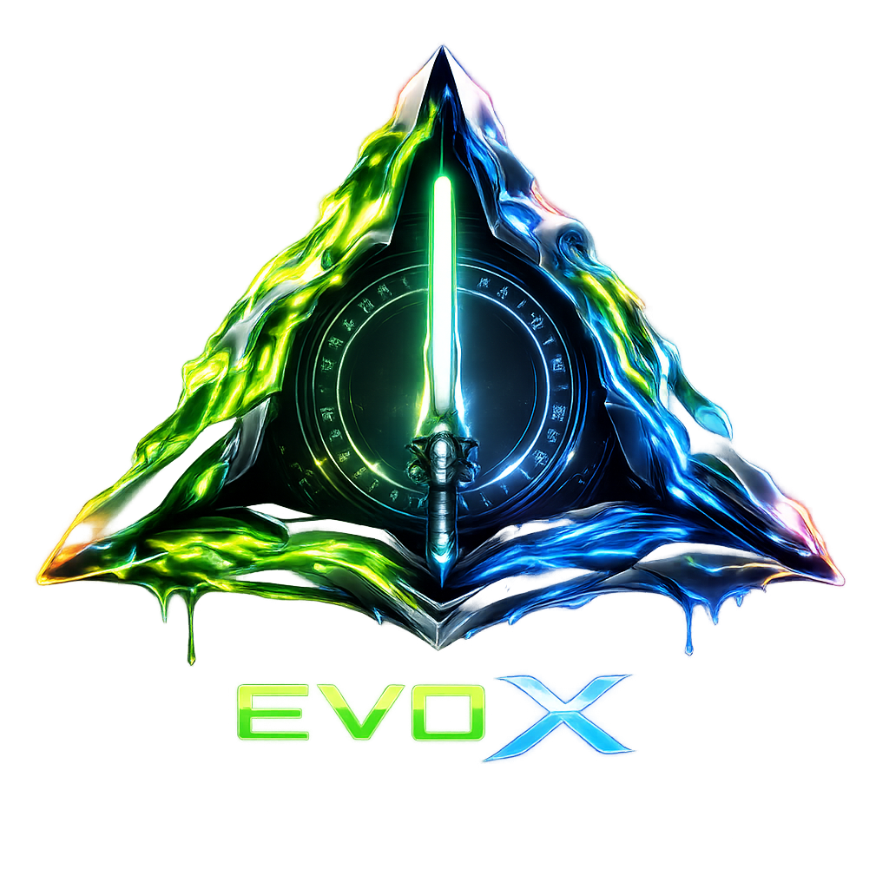
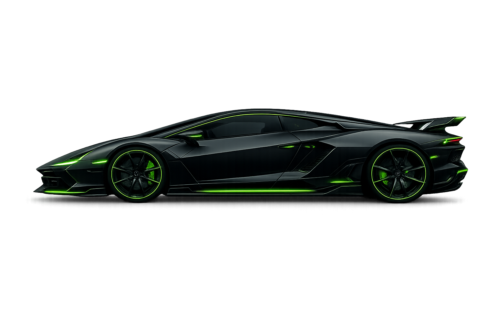
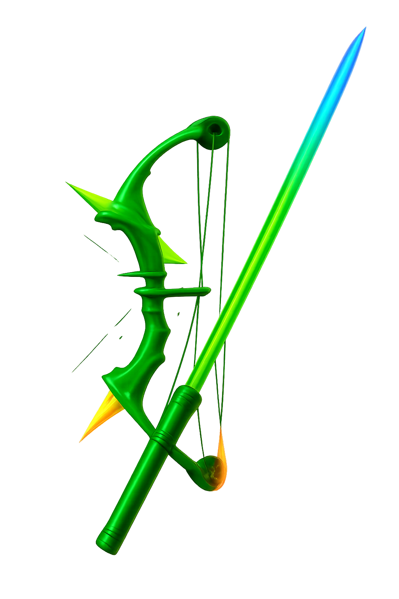
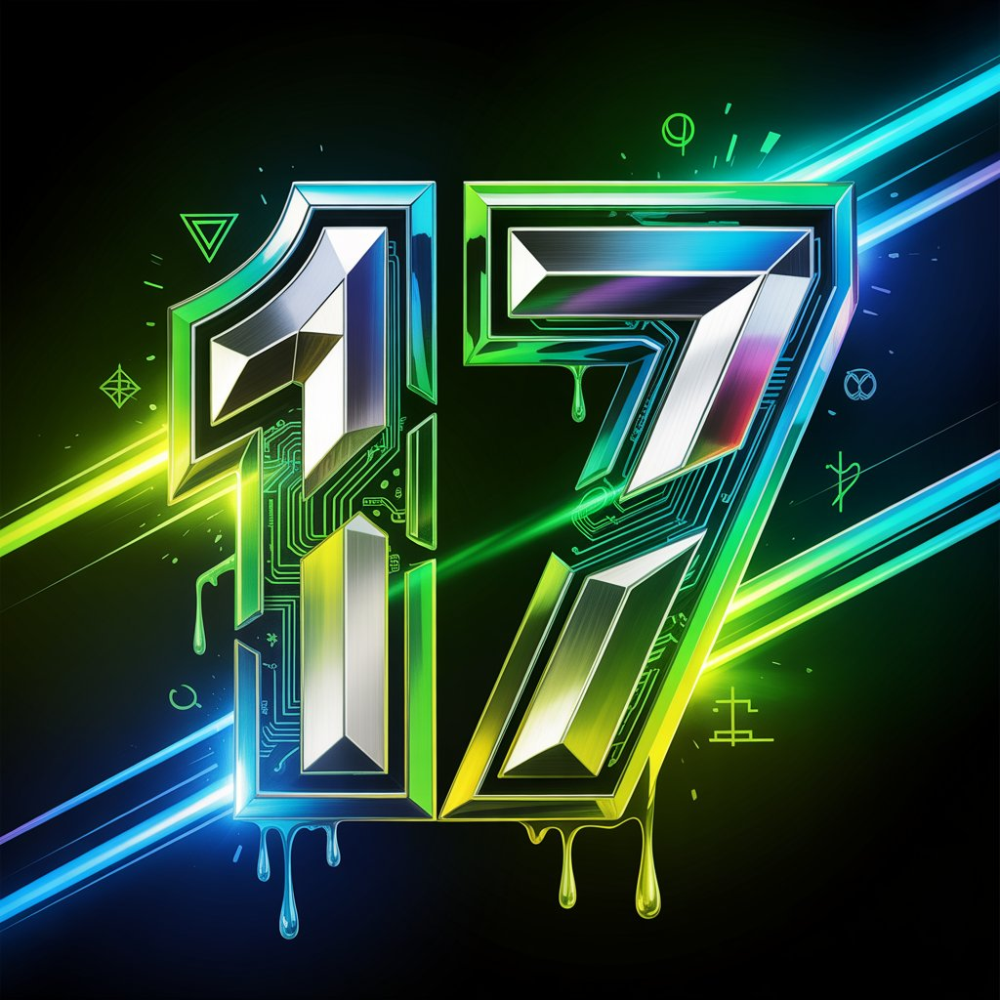

The EvoX 17
Sígueme en YouTube y Twitch para los directos
Creador de contenido de gaming, skill y variedad. Clips y directos con buen rollo.
Qué hago en mis directos
En mis directos encontrarás partidas relajadas, buen rollo y momentos épicos. Me gusta jugar con calma, charlar con la gente del chat y disfrutar del juego sin prisas.
Suelo jugar a títulos de aventura, acción, mundo abierto y sagas míticas. También hago directos chill donde simplemente hablamos, reaccionamos o compartimos curiosidades del mundo geek.
Mi objetivo es crear un espacio cómodo donde cualquiera pueda entrar, desconectar y pasarlo bien.
Quién soy

Hola 😁 Soy Evo. Estoy empezando en el mundo de la creación de contenido y me apasiona todo lo relacionado con el motor, los coches y la conducción.
También tengo un lado muy geek: videojuegos, sagas míticas, universos de fantasía y todo ese contenido que nos hace desconectar.
Mis directos son chill, con charlas naturales, partidas relajadas y buen rollo.
Mi lado geek

Me encantan los videojuegos, la fantasía épica y las armas míticas...
Explicando el nombre
Mi nombre, The EvoX 17, nace de varias cosas que me representan y que están muy ligadas a mis gustos. Por un lado, EvoX proviene del Mitsubishi Lancer Evolution X, mi coche favorito desde pequeño.

El número 17 es un homenaje a Jules Bianchi, uno de los pilotos que más admiraba y que tristemente nos dejó tras un accidente. Él corría con ese número y quise mantenerlo como recuerdo.
La palabra The viene del inglés simplemente porque me gustaba cómo sonaba dentro del nombre. Y a veces verás que uso guiones bajos en lugar de espacios, porque me gusta cómo queda estéticamente.
Explicando el logo
El logo de EVO X nace como un emblema de energía, precisión y evolución constante, reflejando tanto mi estilo como la vibra del canal.
El triángulo aporta la base técnica: una estructura estable que simboliza dirección, equilibrio e innovación, muy ligada al mundo del motor y a la tecnología.
La espada introduce el lado épico: fuerza, avance y la idea de seguir siempre hacia adelante. Además, conecta con mi lado geek, recordando a los sables láser de Star Wars y a las armas míticas de universos fantásticos.
El plasma líquido que rodea ambos elementos une estos mundos, mostrando movimiento, intensidad y la energía que quiero transmitir en cada directo.
Los colores neón —verde y azul— junto a los acentos morados y amarillos crean un espectro que mezcla tecnología, velocidad y carácter, dando al logo una identidad propia.
Las runas que rodean el círculo central aportan la parte más mística del diseño. Representan conocimiento antiguo, protección, sabiduría y destino, como si el emblema tuviera un legado detrás. También conectan con mis sagas favoritas: evocan inscripciones élficas o enanas de El Señor de los Anillos, aportan un contraste místico al estilo tecnológico del triángulo y completan una composición que recuerda a símbolos icónicos como las Reliquias de la Muerte de Harry Potter.
Este símbolo no solo identifica al canal: representa la esencia de EVO X y la energía que compartimos en cada stream.
Horario
| Día | Hora | Contenido |
|---|---|---|
| Lunes | 12:00 | Minecraft: Mundo EvoX |
| Martes | 12:00 | Sombras de Guerra |
| Miércoles | 12:00 | Automovilista 2: EvoX GT1 World Tour |
| Viernes | 12:00 | Lego Star Wars Skywalkers Saga |
Los Jueves no hare directo, pero preparare clips y demas. Algunos sabados o domingos hare directos, en los cuales jugaremos a juegos chill o juegos a los que no juguemos los otros dias
Redes sociales
Aquí te dejo mis redes sociales, representadas con sus iconos y colores para que puedas encontrarlas fácilmente.